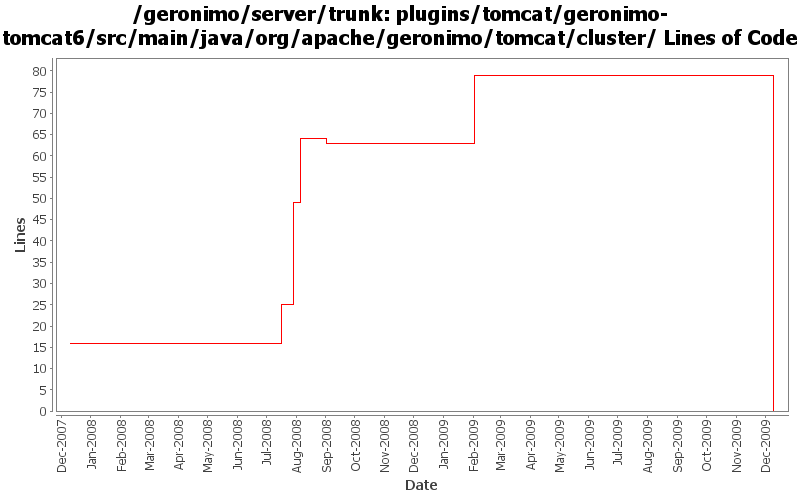

[root]/plugins/tomcat/geronimo-tomcat6/src/main/java/org/apache/geronimo/tomcat/cluster

| Author | Changes | Lines of Code | Lines per Change |
|---|---|---|---|
| Totals | 54 (100.0%) | 87 (100.0%) | 1.6 |
| jawarner | 7 (13.0%) | 56 (64.4%) | 8.0 |
| gawor | 1 (1.9%) | 16 (18.4%) | 16.0 |
| jdillon | 27 (50.0%) | 12 (13.8%) | 0.4 |
| djencks | 1 (1.9%) | 3 (3.4%) | 3.0 |
| xuhaihong | 15 (27.8%) | 0 (0.0%) | 0.0 |
| gdamour | 3 (5.6%) | 0 (0.0%) | 0.0 |
GERONIMO-4980 Use Tomcat 7 in Geronimo 3.0
0 lines of code changed in 15 files:
added license headers
16 lines of code changed in 1 file:
GERONIMO-4239, sort of. Use transitive depenedencies in c-m-p everywhere. This may break stuff.... let me know
3 lines of code changed in 1 file:
GERONIMO-4220: Tomcat Cluster Sender gbean should all Transport element
18 lines of code changed in 2 files:
GERONIMO-3759: Geronimo Tomcat Clustering: No GBeans for adding Static Members
26 lines of code changed in 2 files:
GERONIMO-4187 : setManagerClassName has been deprecated for the SimpleTCPCluster class in Tomcat Clustering
11 lines of code changed in 2 files:
GERONIMO-4177 : FarmWarDeployerGBean uses incorrect hardcoded tomcat class
1 lines of code changed in 1 file:
More loggers back to static
12 lines of code changed in 9 files:
(GERONIMO-3985) Use SLF4J as the primary logging facade for Geronimo
0 lines of code changed in 18 files:
Add support for the clustering of Tomcat Web-applications over WADI. The change
replicates the same projects and design than for the clustering of Jetty
Web-applications over WADI.
A couple of things specific to Tomcat: we insert a Valve in front of all the
Valves, even the Geronimo before after one, in order to hook-in the traversal
of the WADI Contextualiser stack prior to enter the web-application.
This fixes GERONIMO-3696 - Tomcat Clustering over WADI
0 lines of code changed in 3 files: